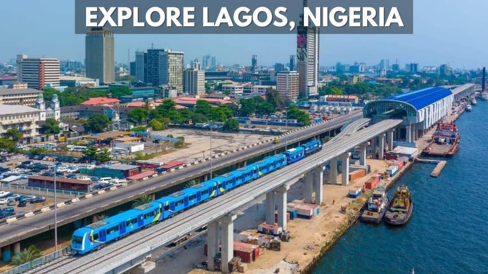

Oluchukwu Ordiah
About Me
My name is Oluchukwu, and I go by "olugnv" online. I was born and raised in Lagos, Nigeria, and I currently live there with my family. I enjoy learning about web development, exploring new technologies, and building things that make people's lives a little easier. I love music, reading, and spending time outdoors whenever I get the chance.
Lagos, Nigeria

Lagos is a vibrant coastal city and the largest city in Nigeria. It is known for its lively music and film industries, beautiful beaches, and bustling markets. Every year, millions of people visit Lagos to experience its culture, cuisine, and creativity.